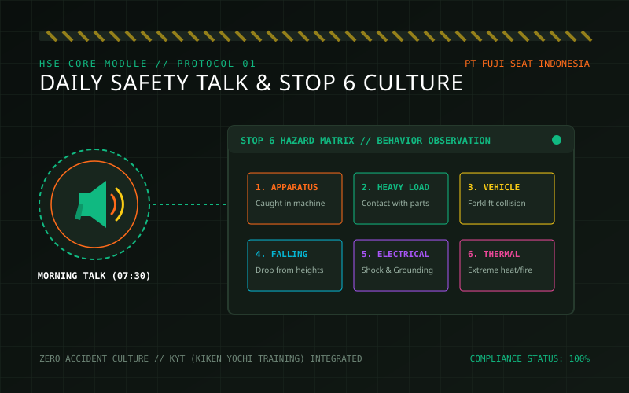
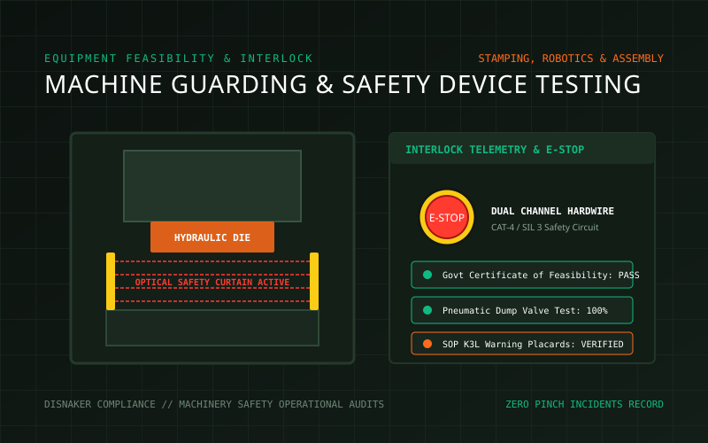
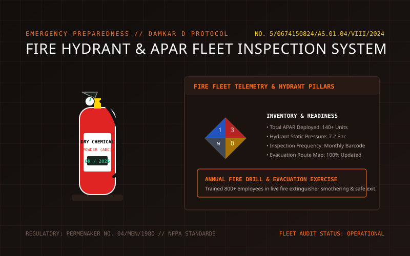
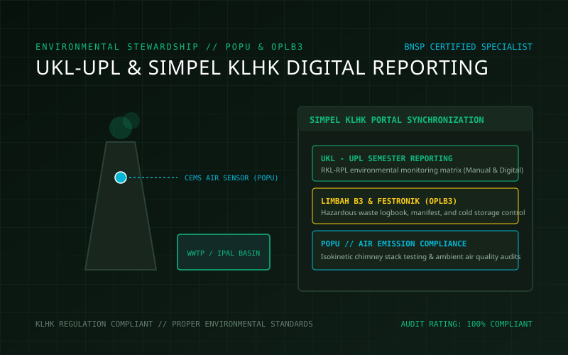
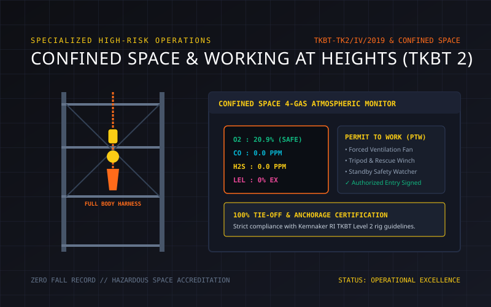
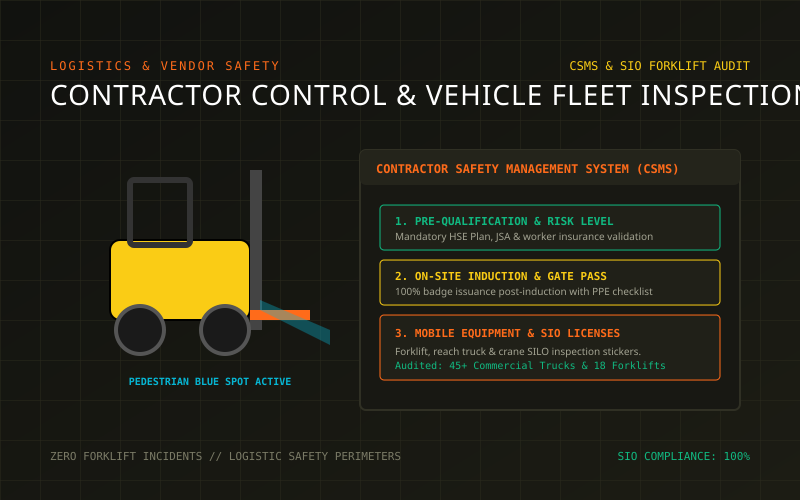
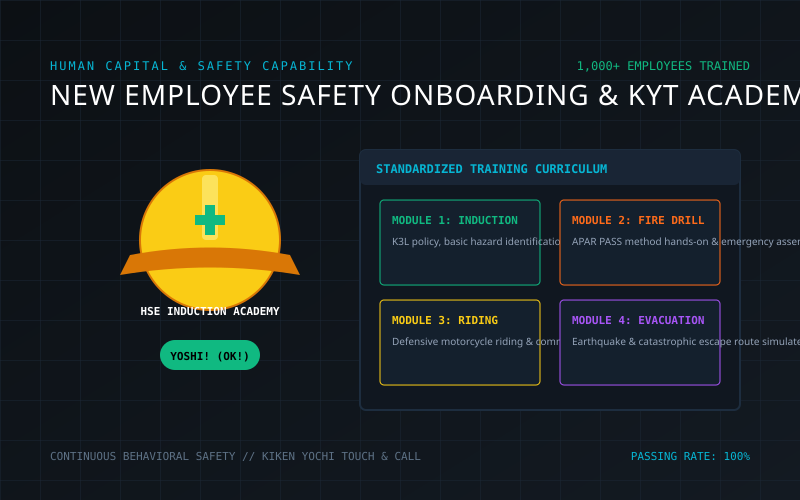
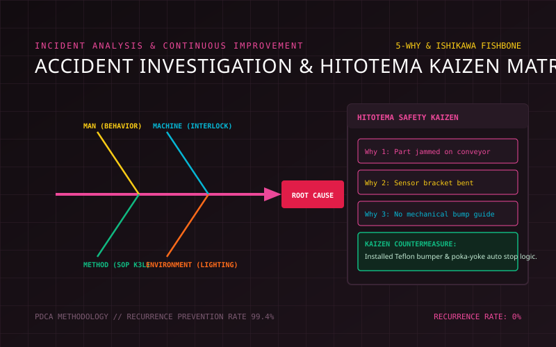

•
My last work experience as HSE, I have a certification of General Occupational Safety and Health Expert. My work interests are in the field of safety, quality and production.
"Safety is not merely a set of compliance rules; it is an uncompromising industrial discipline and collective culture. Protecting lives, preserving the environment, and elevating production quality."
Portofolio proyek nyata dalam rekayasa sistem keselamatan kerja, pengujian kelayakan mesin, manajemen tanggap darurat, dan kepatuhan lingkungan hidup.

Safety Culture 01Restrukturisasi agenda safety talk harian (07:30) mengintegrasikan klasifikasi 6 bahaya STOP 6 manufaktur dan pelatihan reflek Kiken Yochi (KYT).

Equipment Safety 02Inspeksi kelayakan operasional safety device mesin press, tirai optik (light curtain), dan sirkuit interlock E-Stop untuk sertifikasi legal Disnaker.

Fire Response 03Manajemen 140+ unit APAR powder & CO2 berbarcode, pengujian tekanan statis hidran (7.2 Bar), dan komando simulasi evakuasi kebakaran tahunan 800+ staf.

Environmental 04Penyusunan dokumen UKL-UPL, pelaporan digital portal SIMPEL KLHK, manifes limbah B3 (OPLB3) via FESTRONIK, dan pemantauan cerobong emisi (POPU).

High Risk Ops 05Protokol Izin Kerja (Permit-to-Work) tangki terbatas dan perancah ketinggian: uji atmosfer 4-gas (O2, LEL, CO, H2S) dan verifikasi full body harness.

Contractor & Fleet 06Sistem seleksi dan induksi kontraktor pihak ketiga (CSMS), inspeksi harian armada forklift & logistik, penegakan lisensi SIO, dan lampu blue spot visual.

Training & Academy 07Kurikulum 4 modul pelatihan karyawan baru: Pengenalan Kebijakan K3L, Praktik Padam Api APAR, Safety Riding berkendara motor, dan Jalur Evakuasi.

Investigation & Kaizen 08Metodologi analisis akar masalah 5-Why & diagram tulang ikan Ishikawa, dipadukan gerakan Kaizen Hitotema untuk pencegahan insiden berulang (0% recurrence).
Struktur fondasi profesional yang mengombinasikan latar belakang rekayasa energi minyak bumi, penguasaan regulasi K3L nasional, dan eksekusi di lantai pabrik.
Diploma III (D3) Teknik Perminyakan (Petroleum Engineering)
Jurusan Ilmu Pengetahuan Alam (IPA)
Tempat, Tanggal Lahir: Tangerang, 13 Juni 1996
Ahli K3 Umum (Kemnaker & BNSP), Tenaga Kerja Bangunan Tinggi Tingkat 2 (TKBT 2), Damkar D, Confined Space Entry Course.
POPU (Pengendalian Pencemaran Udara BNSP), OPLB3 (Pengolahan Limbah B3 BNSP), Dokumen UKL-UPL, SIMPEL KLHK.
ERP SAP (EZRunner), Microsoft Office Suite (Word, Excel, PowerPoint), Desain Grafis (Corel Draw & Canva).
Keselamatan bukanlah penghambat efisiensi, melainkan prasyarat mutlak untuk menghasilkan produk presisi berkualitas tinggi tanpa cacat kecelakaan.
Memiliki daya tahan kerja lapangan yang tangguh, cermat dalam inspeksi bahaya mikro, dan berorientasi pada ketuntasan penyelesaian SOP.
Mampu menjembatani komunikasi keselamatan antara manajemen direksi, inspektur pemerintah Disnaker/KLHK, vendor kontraktor, hingga operator lini pabrik.
"KESELAMATAN BUKAN SEKADAR ATURAN DI ATAS KERTAS, MELAINKAN BUDAYA DAN DISIPLIN NYATA DI SETIAP DETIK OPERASIONAL PABRIK."
Rekam jejak implementasi keselamatan kerja dan tata kelola lingkungan pada industri manufaktur tier-1 otomotif dan rekayasa teknologi.
Kredensial lisensi profesi yang diterbitkan oleh Kementerian Ketenagakerjaan RI dan Badan Nasional Sertifikasi Profesi (BNSP). Klik kartu untuk memeriksa detail kompetensi.
Kementerian Ketenagakerjaan Republik Indonesia
Badan Nasional Sertifikasi Profesi
Kemnaker RI — Bekerja di Ketinggian & Akses Tali
Kemnaker RI — Tanggap Darurat & Proteksi Api
Keselamatan Operasi Bekerja di Ruang Terbatas
BNSP — Operasional Limbah Bahan Berbahaya & Beracun
BNSP — Pengendalian Emisi Cerobong & Udara Ambien
Terbuka untuk peluang karir HSE Staff, Safety Officer, K3 Coordinator, maupun audit kepatuhan lingkungan industri.
+62 822-1702-7098 (Respon Cepat)
danywiratama@gmail.com (Salin Alamat)
linkedin.com/in/dany-wiratama-829280101
Karaba Indah Blok C No.23, Telukjambe Timur, Karawang
Kirimkan pesan penawaran kerja sama, jadwal wawancara, atau diskusi teknis K3L secara langsung.